git and github
why version control?
- makes coordinating files across computers easy 💻
- keeps a clean history of your code evolution 📜
- no need for messy suffixes (v1, v2, …, v19380, vfinal) 🗂
- gives you the chance to ask yourself “do i really want to make these changes?” 🤔
- streamlines review of external code changes 👥
maybe you already know other ways to share code?
why git?
- it’s popular! in the stackoverflow developer survey, 93.9% of developers using version control software said they use git.
the result is that git comes with a large resource base and is compatible with all the major operating systems.

a bit about git
- git is an open-source version control system.
- git stores code and its history in a repository.
- each revision to the code is added to the repository through a commit process.
- git allows you to have branches of your code that keeps development separate from the main codebase until it is complete.
- the main version of your code is often on the “main” branch (what used to be called the “master” branch).
- git allows you to push or pull code from remote servers.
github
- github is a website and online service with free and paid tiers that allows you to:
- host git repositories
- publicize your profile and repositories
- track issues
- document your projects with wikis
- host static websites
- coordinate teams of developers
- do project management
- automate project workflows


github’s mascot and logo is the octocat, a creature with five octopus like arms. the octocat character was designed by the same graphic designer, simon oxley, who designed the bird logo that twitter uses.
read more about github: https://en.wikipedia.org/wiki/github
getting started
personal reflections
- what features of git and github are you looking to leverage the most?
- look through examples of successful repositories
- mathew kiang (assistant professor at stanford) has some great repositories focused on epidemiological and population health research
- take a look at the repository for dplyr:
https://github.com/tidyverse/dplyr
installation
- you’ll need to install git: the installation procedures depend on if you’re on windows, mac, or linux.
- follow the installation instructions here https://happygitwithr.com/install-git.html:
local setup
- after installation, you’ll need to configure git:
- use the same name and email address you are going to use with github.
- i would highly recommend using a long-term personal email rather than your institutional email so it’s easy to carry your portfolio of work on github on with you after you graduate.
setup a github account
sign up at https://github.com/login
some advice from happy git with r:
- incorporate your actual name
- reuse your username from other contexts
- pick an appropriate username you will be comfortable revealing to future bosses
- shorter is better
- be as unique as possible in as few characters as possible
- make it timeless
- don’t highlight your current university, employer, or place of residence since these can all change
- all lowercase is recommended
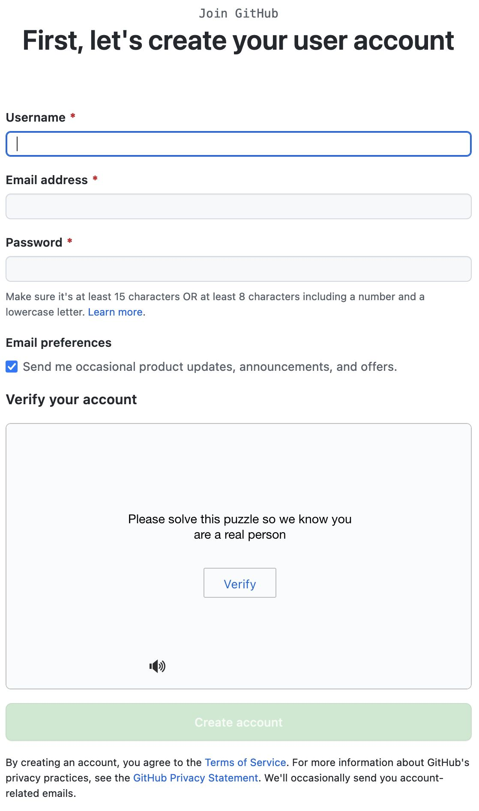
the form for creating an account on github
set up an ssh key
we recommend setting up ssh (secure shell) key based authentication with github.
this allows your computer to be automatically authenticated when you communicate with github.
follow the instructions here:
https://happygitwithr.com/ssh-keys.html
set up a local repository in rstudio
nativate to file → new project
select “create a git repository” which informs rstudio you want to use git.

with the new project wizard window in rstudio, you can specify the directory dame for your project, create your project as a subdirectory of another folder, and use the provided checkbox to indicate that you’d like to initialize the project as a git repository.
git panel in rstudio
rstudio adds a git tab in your environment/history panel.
this panel is a point-and-click interface to:
- review your changes
- stage changes
- write commits
- push and pull commits
- view the commit history
- navigate branches
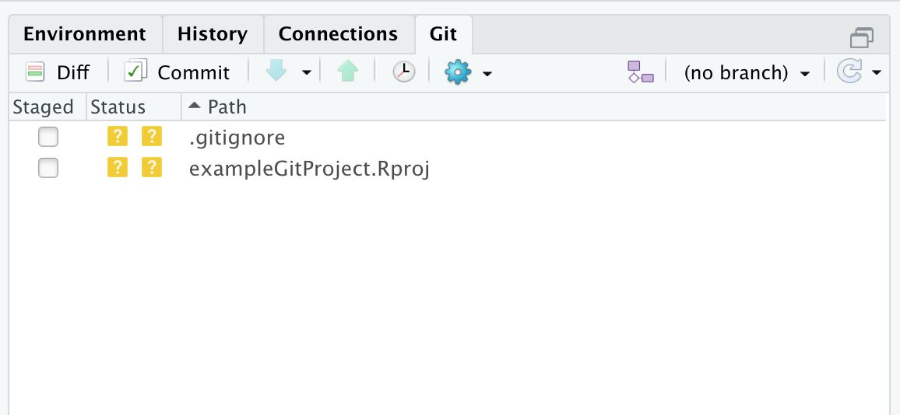
the git panel in rstudio shows changes you’ve made and lets you see the changes you’ve made, commit them, and push them to github in a user-friendly interface.
setting up a remote repository
navigate to github.com → login → new repository
and fill out the form.
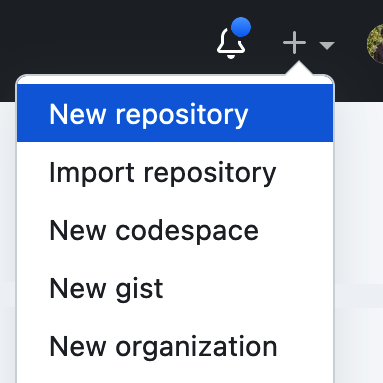
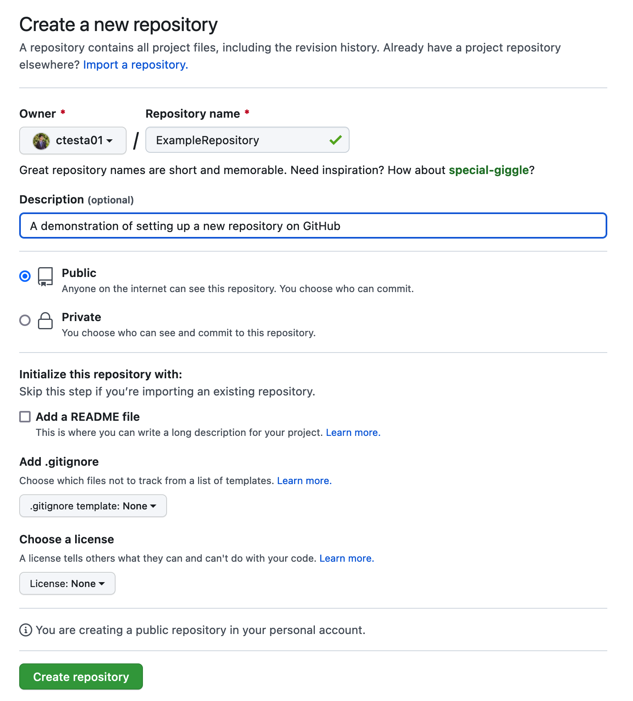
create an initial commit and push
# let your local repository know about the remote repository
git remote add origin git@github.com:ctesta01/examplerepository.git
git branch -m main # use "main" as the default branch
git add .gitignore # add a file to the staging area
git commit -m "initial commit" # name your commit
git push -u origin main # push your commit to the remote repository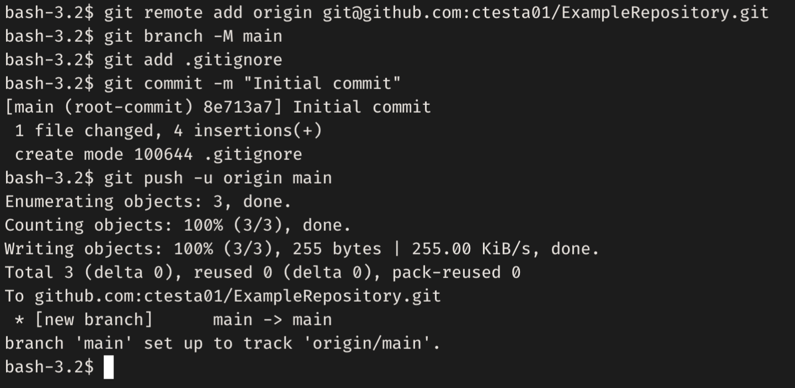
these are the above commands being run in the terminal, along with the output produced. you can see that git will report on how many objects and how many bytes are being uploaded.
congrats!
you’re using github!
readmes
a readme serves as an introduction to and documentation for your repository.
like any documentation, feel free to start small and document as you develop!
you can learn more about reamdes from github here: docs.github.com/…
read the section about readmes in the r packages book here: https://r-pkgs.org/other-markdown.html#sec-readme
basic workflow overview
the basic workflow for making updates to a git repository is done in three steps:
- making changes to your files
- adding them to the staging area
- commit these changes with a explanatory message
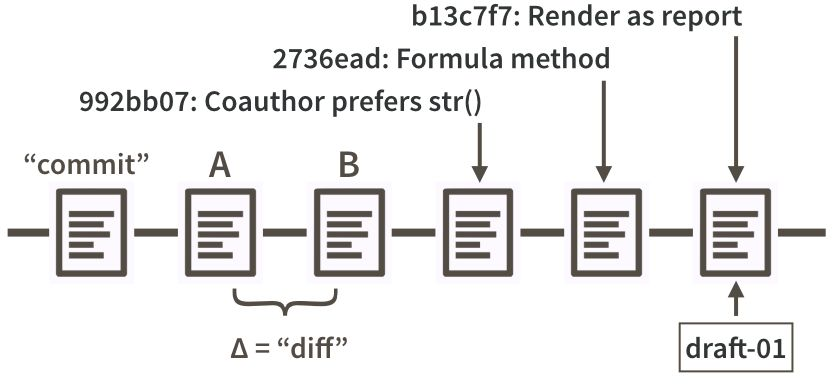
this figure from happy git with r shows examples of commits made in a sequence. each commit is accompanied by an id, a message, and the differences between two commits are referred to as a “diff”.
key commands
git status
git status is a basic command that displays the current state of the working directory.
it’s a good idea to always run git status before changing your code because there may be something you want to commit or address first.
the rstudio git panel displays most of what is displayed in the output of git status.
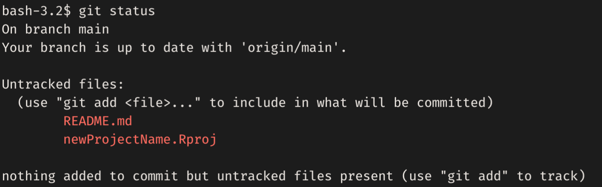
git status from the terminal
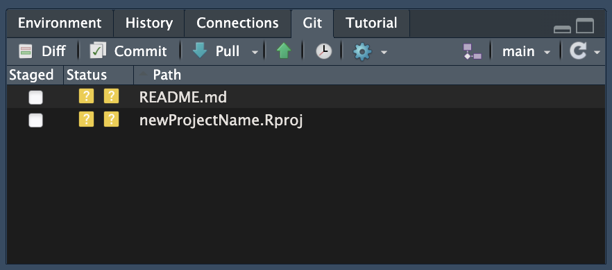
the git panel in rstudio showing new, untracked files
git add
- adds changes to the staging area (also called the index)
terminal version:
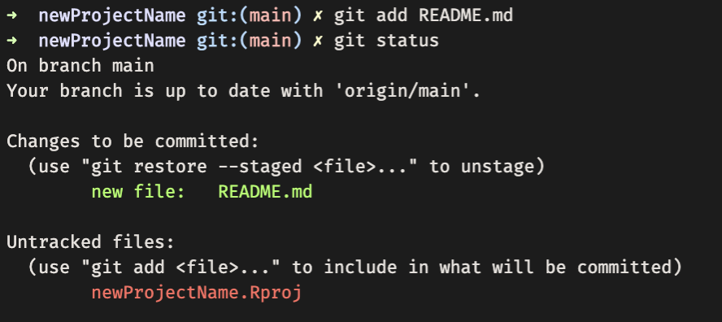
git add readme.md adds any changes to the readme.md (including its creation) to the staging area. git status shows us what changes are staged to be included in the next commit.
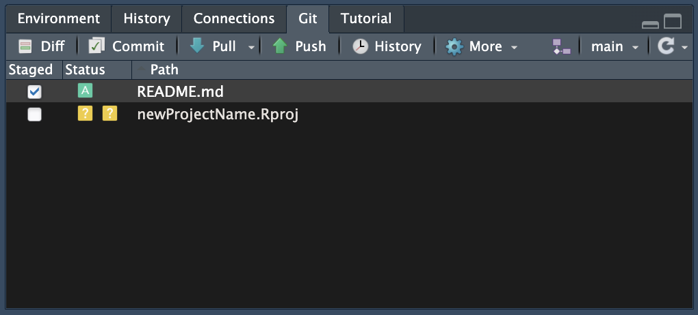
one can add files to the git staging area in the rstudio git panel just by checking the checkbox next to each file in the staged column.
git commit
- records changes to the repository from the staging area
terminal version:
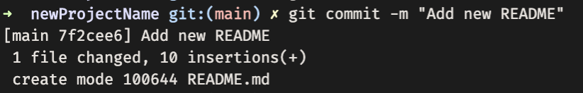
git commit -m 'add new readme' creates a commit message (or basically a name) for the set of changes that were on the staging area and bundles them up together as a commit.
if you need to write a longer, multi-line commit, git commit will open your default terminal based text-editor (often one of nano, vi, or vim) where you can write a longer commit message and save it.
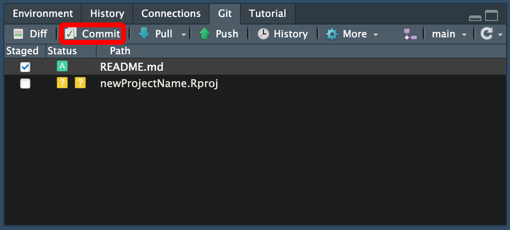
with the changes you want to make staged, click the commit button. you’ll have a chance then to view what changes you’ve made. when you’re sure you want to commit, you can write a commit message, click commit, and then push.
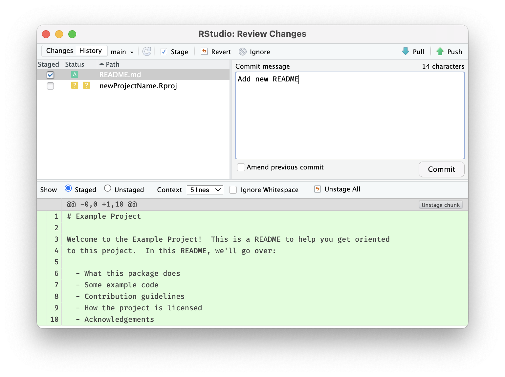
optimal commit messages 📮
- capitalize the first word and do not end in punctuation.
- use imperative mood in the subject line.
- example: “add fix for data reading error”
- specify the type of commit. it is recommended and beneficial to have a consistent set of words to describe your changes.
- example: bugfix, update, refactor, bump, and so on.
- the first line should ideally be no longer than 50 characters.
- be direct! try to eliminate filler words and phrases.
- examples: though, maybe, i think, kind of.
- be direct! try to eliminate filler words and phrases.
optimal commit messages 💌
to develop thoughtful commits, consider the following:
- why have i made these changes?
- what effect have my changes made?
- why was the change needed?
- what are the changes in reference to?
see more advice here:
https://www.freecodecamp.org/news/how-to-write-better-git-commit-messages/
keep a changelog
a changelog is a file that contains a curated, informative history of your project’s updates.
- a changelog allows people to easily see key development and changes in your project.
- read more about changelogs at https://keepachangelog.com
git push
- sends local, committed changes to remote repository
terminal version:
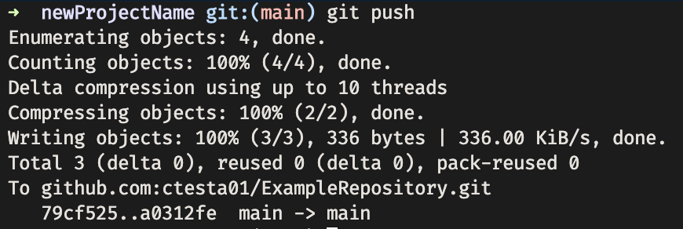
Calling git push on the terminal sends the commits from our local computer to the remote server.
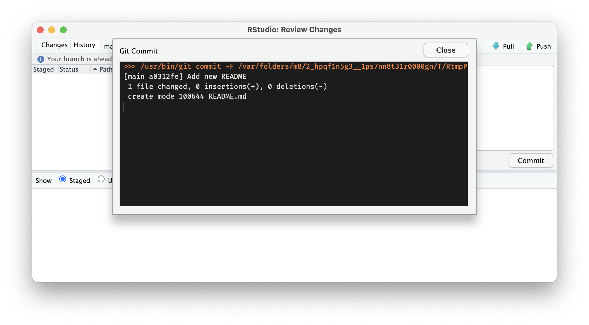
After you click Commit, a window will open showing you the git command that RStudio ran to create your commit. If there are no errors, you can close the window and then click Push.
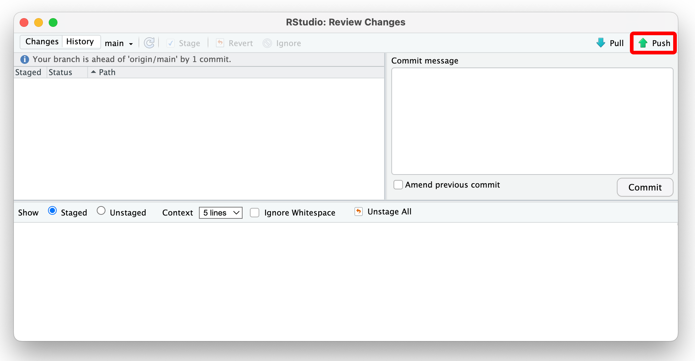
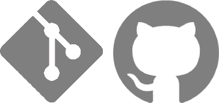